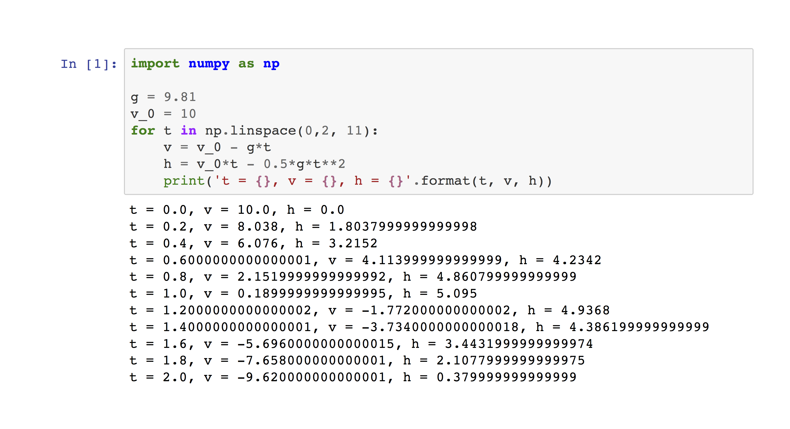
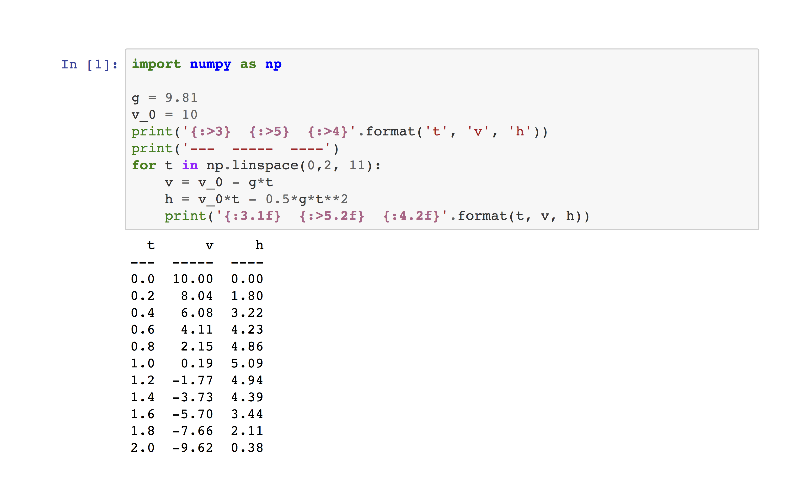

Example: Output formatting
Bad: Code output is misaligned, there are too many decimal digits, and variable names are unnecessarily repeated in each row.
Good: Code output is arranged into an easy to read table. Insignificant digits in the decimal expansion are truncated.
Fancier options. Python and Jupyter notebook provide more sophisticated tools that can be used to format code output in various ways. The table below was produced in a Jupyter notebook using the same data as in the above examples, but with some extra formatting code. You don’t need to use such formatting, but this is an illustration of what is possible.
| t | v | h | |
|---|---|---|---|
| 0 | 0.00 | 10.00 | 0.00 |
| 1 | 0.20 | 8.04 | 1.80 |
| 2 | 0.40 | 6.08 | 3.22 |
| 3 | 0.60 | 4.11 | 4.23 |
| 4 | 0.80 | 2.15 | 4.86 |
| 5 | 1.00 | 0.19 | 5.09 |
| 6 | 1.20 | -1.77 | 4.94 |
| 7 | 1.40 | -3.73 | 4.39 |
| 8 | 1.60 | -5.70 | 3.44 |
| 9 | 1.80 | -7.66 | 2.11 |
| 10 | 2.00 | -9.62 | 0.38 |